Kindle-style preview of the EPUB. Scroll through each section below.
Cover
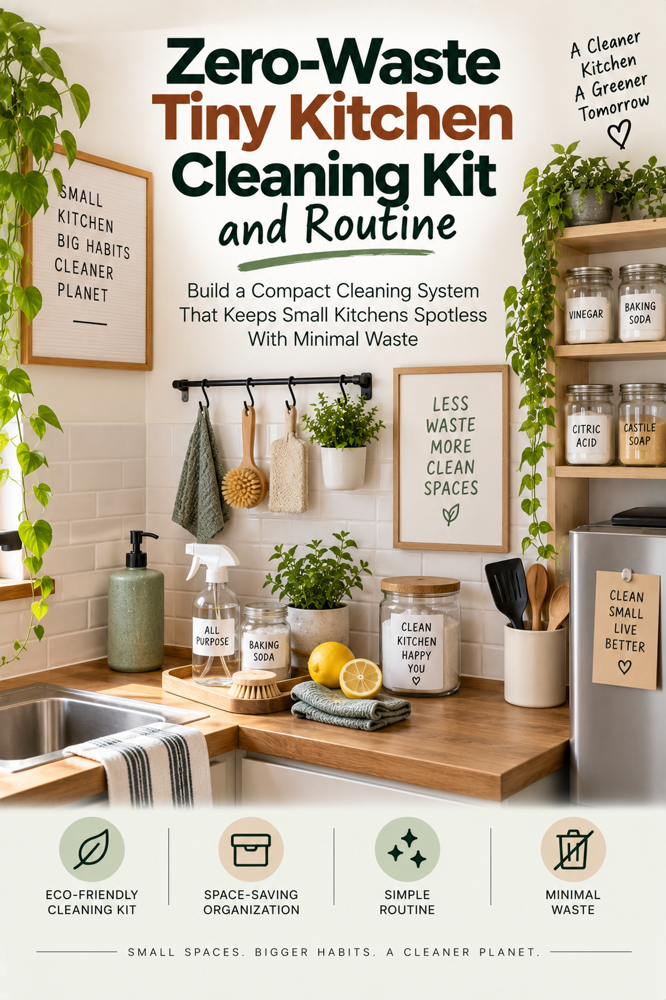
Chapter opener
Chapter
Foundation First: Assess the Kitchen and Set Realistic Goals
This book is for people who cook in a small kitchen — renters, shared flats, and compact apartments. Zero waste here means a direction: fewer disposable wipes, fewer duplicate bottles, and a refill habit you can keep. It is not an automatic result of buying refillable bottles. You will set up a compact kit, mix a few surface-appropriate cleaners, run a short daily reset, and track cost and packaging against a baseline. Do not treat this book as a professional food-safety, mould-remediation, or hazardous-materials manual. Follow manufacturer labels for any sanitizer or disinfectant.
Start here · Before You Begin
Start here
Before You Begin
Measure, list surfaces, and label bottles before you mix anything.
Use this list once, then keep the rest of the book as reference. You do not need to finish every chapter before you clean the sink tonight.
Keep all mixtures away from children and pets. Never store a homemade cleaner in a food or beverage container. Label every bottle with contents and preparation date. Do not reuse a container if its previous contents could react with the new solution. Never mix cleaners or disinfectants unless the product instructions explicitly permit it.
Check
Measure the cleaning-storage space you actually have, including no-under-sink options.
List kitchen surfaces and mark which ones touch food.
Record products you already own. Set unidentified or expired bottles aside for safe disposal.
Choose one mixing area that is not a food-prep board.
Select a small number of tools and make labels before the first refill.
Write a one-month baseline for cost and packaging, then test each method on a hidden spot.
Check
Storage measured.
Food-contact surfaces identified.
Existing products listed.
Labels ready.
Baseline started.
Hidden-spot test done.
Map · How the Systems Work Together
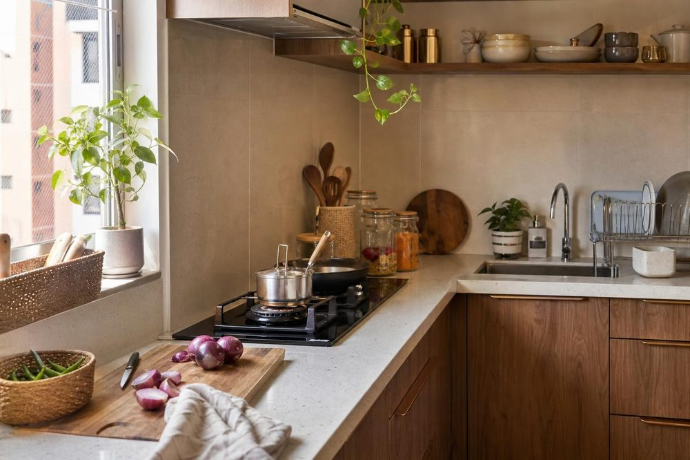
Map
How the Systems Work Together
Use one sequence: assess, set up, clean, respond, review. Named frameworks are tools inside that sequence, not separate programs to memorize.
1. Assess. Measure space, list surfaces, note safety limits, and set a waste-and-cost baseline. The Constraints Compass and Reach Frequency Map belong here.
2. Set up. Choose the kit, a storage layout, and a refill system. CLEAR is the storage layout: Containers, Labels, Essentials, Access, Refill.
3. Clean. Use the daily routine and surface-specific methods. SWEEP is the daily order: Surfaces, Washware, Empty waste, Equipment, Put away. PREP is the occasional deep-clean cycle.
4. Respond. Handle spills with STOP: Secure, Triage, Operate, Purge. Use a labelled sanitizer only when the spill and the surface require it.
5. Review. Track waste, cost, tool condition, and what to change. The Waste and Cost Dashboard and the ninety-day sprint belong here.
If a name is not helping you decide what to do next, skip it and return to this five-step sequence.
Day 1 · Defining Clean in Your Tiny Kitchen
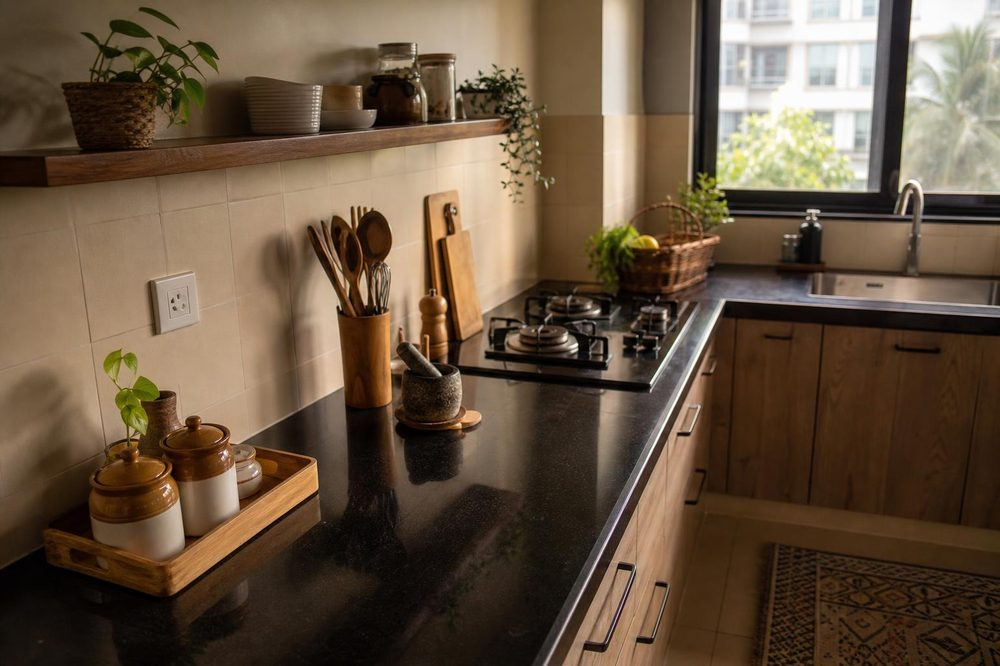
Day 1
Defining Clean in Your Tiny Kitchen
In this apartment
A 1BHK kitchen is clean enough for the next meal when the sink is empty, counters are crumb-free, and food-contact boards are washed. Weekly work is splash zones, the microwave, and floor corners — not a promise of a perfect kitchen.
A clear definition of cleanliness helps anchor your daily and weekly tasks.
Decide what 'done' means in this room before you buy tools. Daily clean: sink empty, counters wiped, no standing food waste. Weekly reset: appliance faces, splash zone, and floor edges. That is a working standard, not a guarantee.
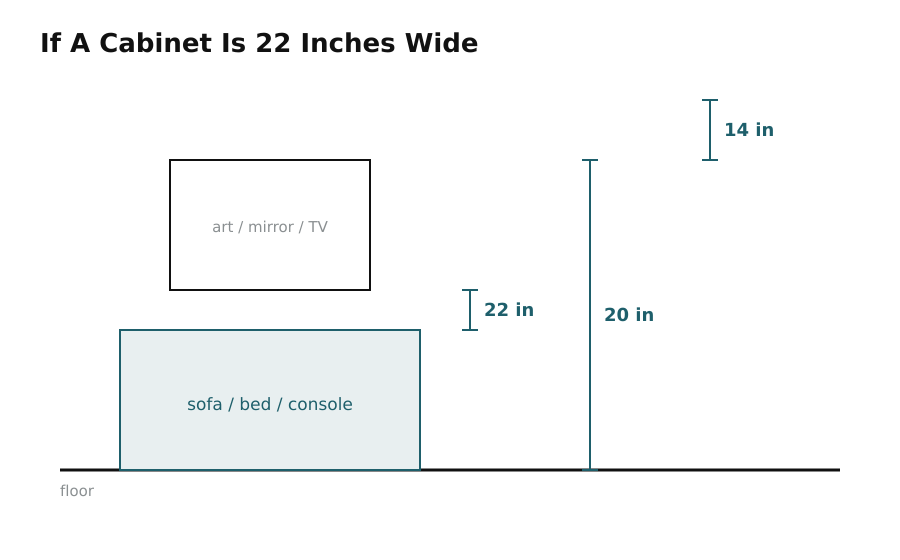
If a cabinet is 22 inches wide, 20 inches deep, and 14 inches high, you can model how a small caddy and refill jars fit.
Cleaning is not the same as sanitizing or disinfecting. Cleaning removes dirt, food residue, and many germs. Sanitizing or disinfecting requires a product and procedure suitable for the specific surface and purpose. Always follow the product label, including contact time, dilution, ventilation, and rinsing requirements. Never mix cleaning products or disinfectants.
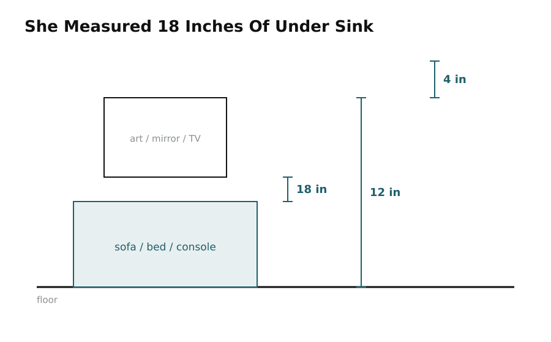
She measured 18 inches of under sink width and 12 inches of height, plus a narrow 4 inch shelf by the stove.
Zero waste in this book is a tracking goal. Reusable cloths still use water, detergent, and eventually need disposal. Count packaging and cost against a baseline instead of claiming the system is waste-free.
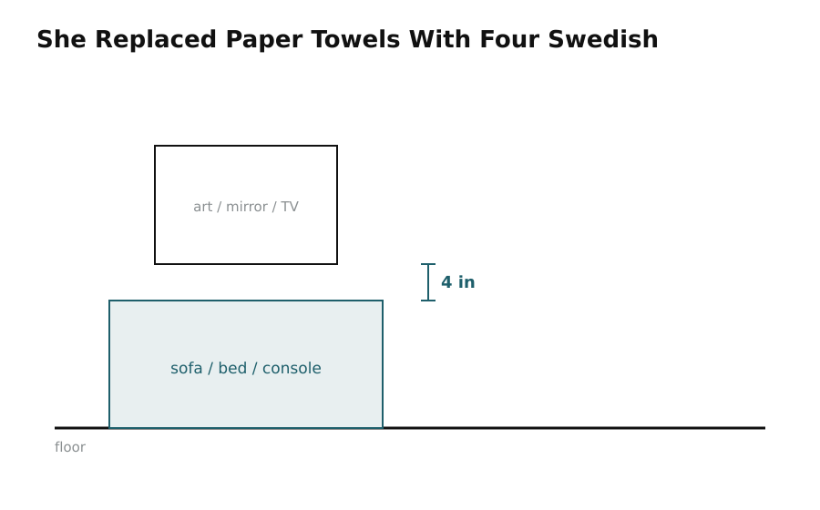
She replaced paper towels with four Swedish cloths stored on the 4 inch shelf in a small tray.
Day 2 · Measuring Your Kitchen Constraints
Day 2
Measuring Your Kitchen Constraints
Measuring your kitchen constraints is essential for effective organization and planning.
Use a tape measure to quantify your storage inches, time in minutes, and waste in packages. For storage inches, measure the interior width, depth, and height of under-sink space, open shelves, and the clearance for your tallest bottle. For example, if a cabinet is 22 inches wide, 20 inches deep, and 14 inches high, you can model how a small caddy and refill jars fit.
She measured 18 inches of under sink width and 12 inches of height, plus a narrow 4-inch shelf by the stove.
Decide your daily and weekly effort in minutes. For instance, aim for 8 to 12 minutes daily and 25 to 35 minutes weekly. These caps keep routines sustainable and manageable, especially in a tiny kitchen.
Count how many bottles, sprayers, sponges, gloves, and paper towel rolls you toss per month. Write it down and note materials like plastic, cardboard, and mixed. This baseline will help you identify areas for improvement.
Day 3 · Mapping Your Micro Zones
Day 3
Mapping Your Micro Zones
Mapping micro zones helps streamline your cleaning process and tool placement.
Draw a simple plan of your kitchen on one sheet of paper. Label five zones: Wet Zone (sink, faucet, drainboard, dish rack), Prep Zone (counter space for chopping and mixing), Heat Zone (stove, oven, nearby backsplash), Mess Zone (areas that catch splatters), and Storage Zone (where your cleaning kit will live). This visual representation will guide your cleaning routine and tool organization.
For each zone, note the most common messes. For example, the wet zone often has food bits and soap scum, while the prep zone accumulates crumbs and sticky film. Identifying these messes allows you to place tools nearby for quick access and reduce the steps needed to clean up.
This mapping exercise will direct tool placement and routines, ensuring that you can clean efficiently and effectively.
Day 4 · Setting Safety Parameters
Day 4
Setting Safety Parameters
Establishing safety parameters ensures that your cleaning methods are effective without damaging surfaces.
Cleaning is not the same as sanitizing or disinfecting. Cleaning removes dirt, food residue, and many germs. Sanitizing or disinfecting requires a product and procedure suitable for the specific surface and purpose. Always follow the product label, including contact time, dilution, ventilation, and rinsing requirements. Never mix cleaning products or disinfectants.
List surfaces: laminate, wood, stone, stainless, glass, painted cabinets, appliance skins, and seams. Vinegar can etch natural stone. Abrasives can scratch acrylic and some stainless. Test a hidden spot and wait to inspect before wider use.
Keep all mixtures away from children and pets. Never store a homemade cleaner in a food or beverage container. Label every bottle with contents and preparation date. Do not reuse a container if its previous contents could react with the new solution. Never mix cleaners or disinfectants unless the product instructions explicitly permit it.
Homemade mixtures are cleaners unless a product you buy is labelled as a sanitizer or disinfectant for that surface. Do not call a peroxide mix a sanitizer because the bottle says 3 percent hydrogen peroxide.
Do this
Write the surface list and mark food-contact areas.
Read every label you already own. Set unknowns aside.
Choose one mixing area away from cutting boards.
Day 5 · Aligning Tasks to Energy and Airflow
Day 5
Aligning Tasks to Energy and Airflow
Aligning cleaning tasks with your energy levels and airflow can enhance efficiency and effectiveness.
Note your schedule and kitchen ventilation. For example, if you cook late at night when your energy is low, it may be more effective to do quick clean-ups immediately after meals when you have more energy. Quick sink clears and counter wipes can happen right after eating, while grease cleaning on the stove can occur while it is warm and the window is open.
Schedule tasks when you have energy and when airflow helps. For instance, do floor corners when traffic is low, ensuring you can clean without interruptions. This alignment will make your cleaning routine feel less burdensome and more manageable.
By being mindful of your energy levels and the kitchen environment, you can create a cleaning routine that works with your lifestyle rather than against it.
Chapter opener
Chapter
The Compact Essentials: Building Your Multi-Use Cleaning Kit
Build one kit that fits the space you measured. The list below is the working set. Optional items come after. Do not share cloths or brushes between raw-meat cleanup and ordinary wiping.
Day 1 · Understanding the Problem
Day 1
Understanding the Problem
In this apartment
Aditi lives in a 1BHK in Pune with a 9-foot living room and a tiny kitchen. Every time she opens her under-sink cabinet, she’s greeted by a chaotic mix of bottles and brushes, making it hard to find what she needs.
Clutter in small spaces can lead to inefficiency and frustration.
Tiny kitchens multiply the friction of every extra object. Single-task tools take up valuable inches in drawers and on rails, while disposables like paper towels create a steady stream of trash. Mismatched bottles occupy awkward corners, and cheap sprayers often fail at critical moments. This chaos leads to decision fatigue, as you waste time searching for the right product for glass versus grease versus scale.
Ergonomics also suffer in cramped spaces. Hard-to-grip brushes, thin cloths that smear instead of absorb, and bulky caddies slow you down. Many small apartments have landlord restrictions that prevent drilling, leading to hooks that fall or magnets that slip, resulting in cluttered counters. To create an effective cleaning system, you must address use, storage, and sustainability together.
The Compact Essentials Framework offers a solution: Coverage, not clutter; the three chemistries; and one-grab portability. By focusing on multi-use tools, you can tackle the dominant soils in tiny kitchens without cluttering your space.
Day 2 · Selecting Your Tools
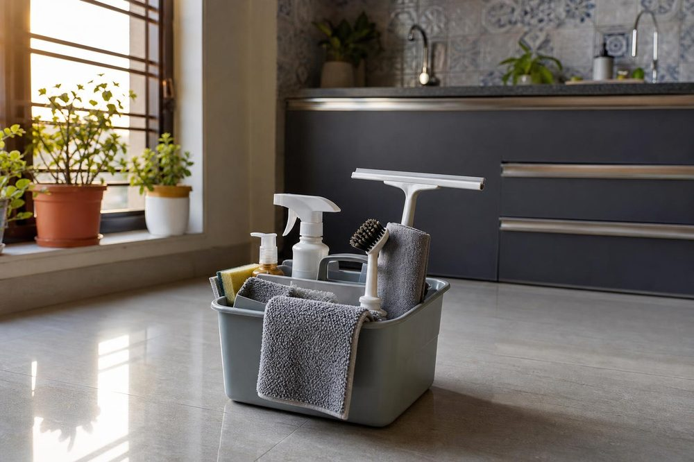
Day 2
Selecting Your Tools
In this apartment
A shared rental with a load-bearing wall has no spare drawer. The kit has to live in one caddy that fits an 18-inch under-sink bay, or on a tension shelf if that bay is full.
Choose multi-use tools that address multiple cleaning tasks without taking up excess space.
Essential: four everyday cloths, two polish cloths, one soft brush, one squeegee, three labelled bottles, gloves, one protected scraper. Optional: bottle brush, extra gloves, a second caddy. Substitutes: a folded cotton towel for a missing polish cloth; a plastic card for a metal scraper on soft finishes.
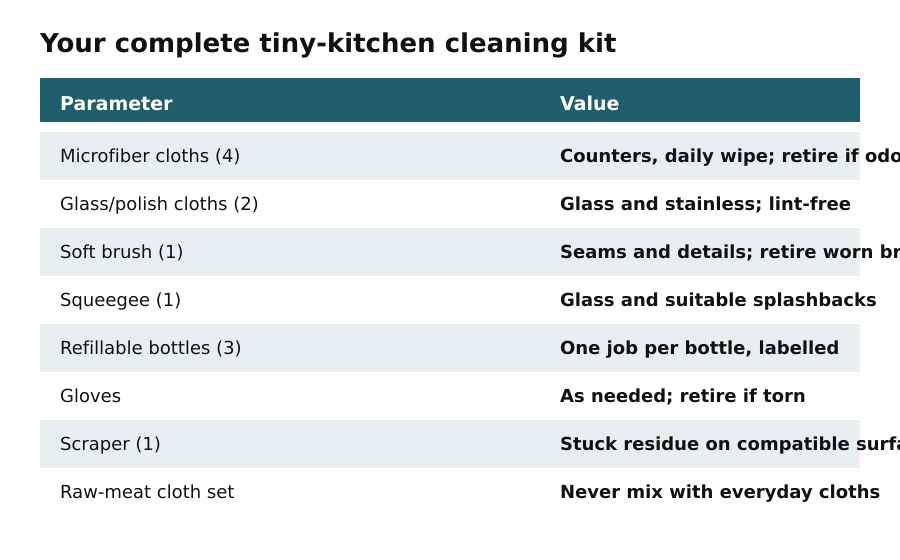
What to notice: quantity is a starting kit, not a shopping contest. Replace by condition, not by a calendar.
If you have no under-sink storage, use a lidded caddy on a high shelf or a hanging over-door rack rated for the weight. If you cannot reach a refill shop, buy the smallest labelled concentrate you will actually empty, and log the packaging as part of the baseline.
Keep a separate cloth pair for raw-meat and poultry juices. Wash those apart from everyday cloths.
Day 3 · Assembling Your Kit
Day 3
Assembling Your Kit
A well-assembled kit maximizes efficiency and minimizes clutter.
Begin by measuring your storage slot—height, width, and depth. Aim for a caddy that leaves one finger of clearance for easy lift-out. Choose a caddy that prioritizes a waterproof base, smooth corners, and a low center of gravity. If your space is narrow, opt for a rectangular caddy and orient bottles with the short side in.
Select standardized containers for your cleaning solutions. Choose refillable bottles in one or two consistent sizes to ensure they nest or line up tightly. Opt for wide mouths for easy refilling with a collapsible funnel. Clearly label each bottle with the product name, dilution ratio, and date mixed, using waterproof labels to prevent smearing.
Stage your caddy by placing the fine mist bottle at the front, brushes handle up, and the squeegee along one side. Fold cloths by task types and tuck the razor scraper safely into a sleeve. If you use gloves, drape them over the edge to dry.
Day 4 · Maintaining Your Kit
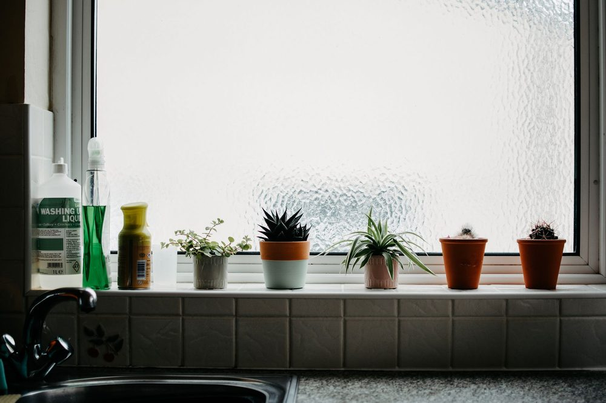
Day 4
Maintaining Your Kit
Regular maintenance keeps your cleaning kit functional and ready for use.
Create a wash loop by keeping a mesh laundry bag inside the caddy for used cloths. When the bag is full, it goes straight into the wash, preventing mildew and keeping cloths together. Set refill triggers by marking a line on the spray bottle at one third. When the liquid hits that line, add the recipe to your next shopping list or batch day to avoid last-minute scrambling.
Regularly vet each tool in your kit. Run your fingertip over the bristles of brushes; if they splay easily, they will likely deform. Check the trigger of the sprayer to ensure it produces a steady mist, and ensure the squeegee blade is supple. Replace any worn-out tools promptly to maintain efficiency.
Finally, avoid common pitfalls such as overbuying cloths, using cheap sprayers, and neglecting to label bottles. Proper labeling prevents confusion and ensures safety in your cleaning routine.
Chapter opener
Chapter
Refillable Cleaner Recipes for Tiny Kitchens
These are small-batch cleaners for selected surfaces. They are not sanitizers unless the product you use is labelled for that job. Do not mix vinegar into castile soap. Use acid and soap as separate approaches. Essential oils are optional fragrance only; they do not make a formula work.
Day 1 · Understanding the Problem
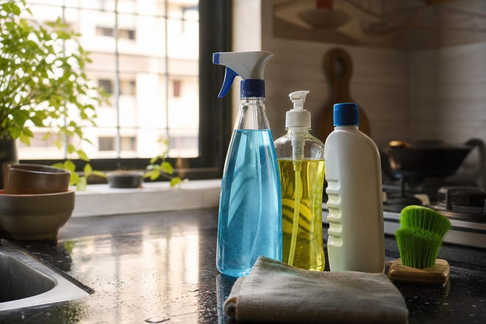
Day 1
Understanding the Problem
In this apartment
A small counter is already crowded with duplicate bottles that are mostly water. The job is fewer, labelled mixes — not a row of 'refillable' claims.
Tiny kitchens need efficient cleaning solutions that minimize clutter and maximize effectiveness.
Store bottles waste space and often leave you guessing which one is for glass. A refillable kit shrinks packaging only if you actually empty and refill the same bottles and you stop buying duplicates.
These formulas are intended for selected surfaces only. Check compatibility and test an inconspicuous area before broader use.
Keep all mixtures away from children and pets. Never store a homemade cleaner in a food or beverage container. Label every bottle with contents and preparation date. Do not reuse a container if its previous contents could react with the new solution. Never mix cleaners or disinfectants unless the product instructions explicitly permit it.
Day 2 · The Solution Framework
Day 2
The Solution Framework
Understanding the three bases of cleaning can simplify your approach and help you create effective solutions.
Cleaning is not the same as sanitizing or disinfecting. Cleaning removes dirt, food residue, and many germs. Sanitizing or disinfecting requires a product and procedure suitable for the specific surface and purpose. Always follow the product label, including contact time, dilution, ventilation, and rinsing requirements. Never mix cleaning products or disinfectants.
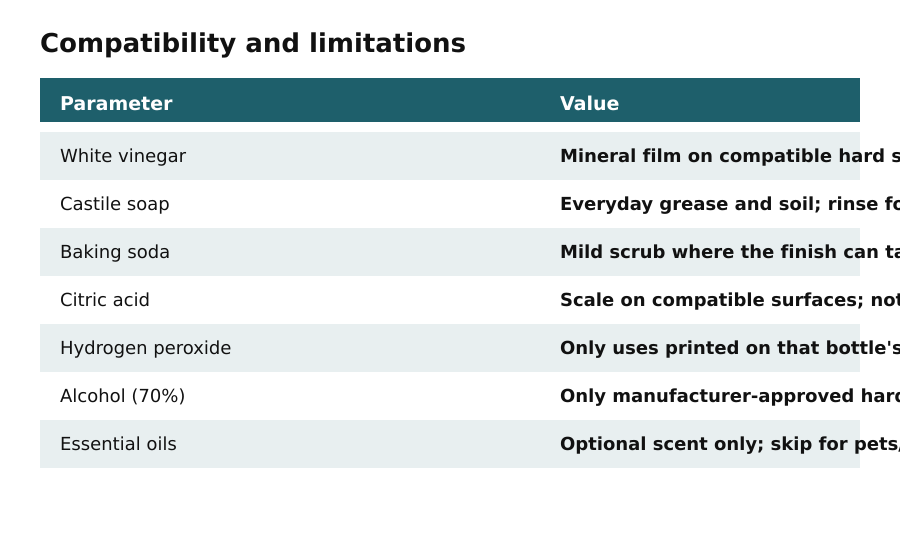
What to notice: each row is a separate approach. Do not combine rows in one bottle.
Think in three separate actions, not one magic bottle: surfactant (castile soap) lifts grease; mild alkali (baking soda) helps stuck film where the surface can take a paste; acid (vinegar or citric acid) is for mineral film on compatible surfaces only. Hydrogen peroxide and alcohol are optional labelled products, not part of the soap mix.
Keep ratio notes on a card in the caddy. Hard water may need a little more soap for grease; that is a test, not a universal recipe.
Day 3 · Recipe cards
Day 3
Recipe cards
Creating effective cleaning solutions requires understanding the right ratios and methods for each recipe.
All-purpose cleaner (soap, not a sanitizer). Purpose: everyday grease and crumbs on laminate, sealed wood, and stainless that the maker allows soap on.
Ingredients for about 440 ml: 15 oz (440 ml) warm water, 1 tablespoon (15 ml) liquid castile soap. Do not add vinegar to this bottle. Vinegar and castile soap work against each other in one mix; use vinegar as a separate mineral-film spray on compatible surfaces only.
Preparation: 1) Water first. 2) Add soap. 3) Swirl, do not shake into foam. 4) Label contents and date. Suitable: laminate, many sealed woods, stainless if the appliance booklet allows. Avoid: natural stone, unfinished wood, electronics. Contact time: not a sanitizer. Rinse food-contact surfaces with clean water. Storage: cool, dark, away from food jars. Discard and remix if the mix smells off, separates badly, or is older than two weeks in a warm kitchen. Safety: keep away from children and pets; do not store in a drink bottle.
Mineral-film spray (acid, separate from soap). Purpose: hard-water spots on glass and compatible laminate. Ingredients: equal parts white vinegar and water, or follow a labelled descaler. Avoid stone, grout you have not tested, and cast iron. Do not mix with peroxide, bleach, or soap in the same bottle. Rinse food-contact surfaces. Label as vinegar mix, not as a disinfectant.
Hydrogen peroxide 3 percent, as sold. Purpose: only the uses printed on that product's label. This book does not convert household peroxide into a food-contact sanitizer by adding a one-minute or five-minute wait.
Keep it in the original brown bottle. Do not decant into a clear drink bottle. Do not mix with vinegar or bleach. Suitable surfaces and wet contact time are whatever the label states. If the label does not cover kitchen food-contact sanitizing, use a product that does, after cleaning. Discard according to the labelled expiry. Ventilate. Gloves if the label asks for them.
Isopropyl alcohol 70 percent, optional. Purpose: quick wipe of manufacturer-approved handles, switches, or screens — not a general kitchen sanitizer and not a food-prep spray unless the label says so. Ingredients: use the product as sold. Avoid damaged finishes, many plastics, and any heat source. Fire risk: no flames, good airflow. Do not mix with other cleaners. Store original labelled bottle, away from children.
Do this
Mix the soap cleaner in a labelled bottle. Keep acid in a second labelled bottle.
Leave peroxide and alcohol in their original containers if you keep them at all.
Write the date on every refill. Remix soap mixes that smell off or look wrong.
Day 4 · How to Put This Into Practice
Day 4
How to Put This Into Practice
In this apartment
In a shared kitchen, everyone needs to read the same label. Mystery bottles get emptied, not reused.
Establishing a clear mixing zone and labeling system can streamline your cleaning process.
Clear a mixing towel on a non-food board. Funnel, bottles, labels first. Make soap cleaner and, if needed, a separate vinegar mix. Do not prepare a 'sanitizer' from peroxide unless you are using the product exactly as labelled.
If you have natural stone, skip vinegar near it. Keep a stone-safe soap dilution only.
Keep all mixtures away from children and pets. Never store a homemade cleaner in a food or beverage container. Label every bottle with contents and preparation date. Do not reuse a container if its previous contents could react with the new solution. Never mix cleaners or disinfectants unless the product instructions explicitly permit it.
Chapter opener
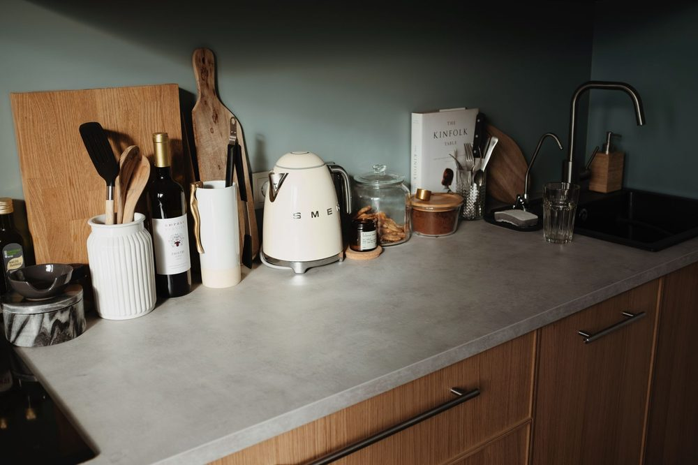
Chapter
Space-Saving Storage Layouts Under 30 Inches
In compact Indian kitchens, every inch counts. This chapter focuses on how to maximize storage within a strict thirty-inch limit, ensuring your cleaning supplies are organized, accessible, and easy to refill. Whether you're in a bustling Mumbai flat or a cozy Pune apartment, these strategies will help you create a functional space without compromising on style.
Day 1 · Understanding Your Space
Day 1
Understanding Your Space
Maximizing storage within a thirty-inch limit is essential for a functional kitchen.
In a tiny kitchen, the challenge is not just the size but the need for a system that keeps everything organized. Anjali's kitchen has limited counter space, making it crucial to utilize vertical storage effectively. By focusing on a thirty-inch budget, she can create a cleaning station that is both functional and aesthetically pleasing.
The first step is to measure the available space. Anjali marks thirty inches on her countertop with masking tape to visualize her storage budget. This measurement will guide her in selecting containers and organizing her cleaning supplies without cluttering the space.
Next, Anjali identifies her essentials. Items like all-purpose cleaner, cloths, and brushes are used daily, while degreasers and glass cleaners are used weekly. By categorizing her items based on usage frequency, she can prioritize their placement in her storage layout.
Day 2 · Implementing the CLEAR Framework
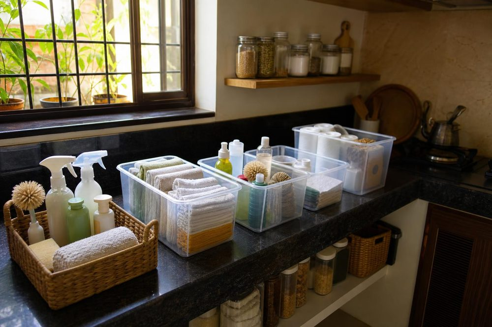
Day 2
Implementing the CLEAR Framework
The CLEAR framework transforms your cleaning kit into a visible and reachable station.
The CLEAR framework consists of Containers, Labels, Essentials, Access, and Refill. Rajesh starts by selecting slim, vertical containers that group his cleaning supplies without adding bulk. He chooses bottles with a two to two and a half inch diameter, ensuring they fit neatly on his limited counter space.
Labels are crucial for quick identification. Rajesh places labels facing forward on each container, using consistent names that match his cleaning recipes. This prevents confusion and ensures he can quickly grab what he needs without searching through clutter.
Access is key to efficiency. Rajesh stages his essentials within one or two touches, using inside door mounting and shallow rails to keep his most-used items readily available. This setup minimizes the number of steps he takes to retrieve cleaning supplies, making his routine more efficient.
Day 3 · Creating Your Reach Frequency Map
Day 3
Creating Your Reach Frequency Map
A Reach Frequency Map ensures everyday items are easily accessible.
Neha begins by drafting her Reach Frequency Map, which categorizes her cleaning supplies based on how often she uses them. She divides her items into three zones: Zone A for everyday essentials, Zone B for weekly items, and Zone C for occasional tools. This mapping helps her visualize where each item should be stored for maximum efficiency.
Zone A includes items like her all-purpose cleaner and cloths, which she places at chest to eye height for easy access. Zone B contains her degreaser and glass cleaner, which she places slightly higher or deeper, while Zone C holds less frequently used items like specialty sponges.
By following the two-touch principle, Neha ensures that her daily kit is always easy to reach. This approach minimizes the time spent searching for items and streamlines her cleaning routine, making her small kitchen feel more functional.
Day 4 · Finalizing Your Storage Layout
Day 4
Finalizing Your Storage Layout
A well-planned storage layout enhances efficiency and organization.
Suresh measures his storage budget and lists his essentials, weekly, and occasional items. He selects slim containers and a narrow caddy that fit within his thirty-inch limit. By prioritizing vertical storage, he maximizes the available space without compromising on accessibility.
He plans vertical mounting for his cleaning supplies, using landlord-safe fixtures like removable adhesive and magnetic strips. This approach allows him to create a storage solution that is both functional and respectful of his rental agreement.
Finally, Suresh places labels forward on every container and bin, ensuring that he can quickly identify each item. He sets visible refill triggers to remind him when supplies are running low, keeping his cleaning station organized and efficient.
Chapter opener
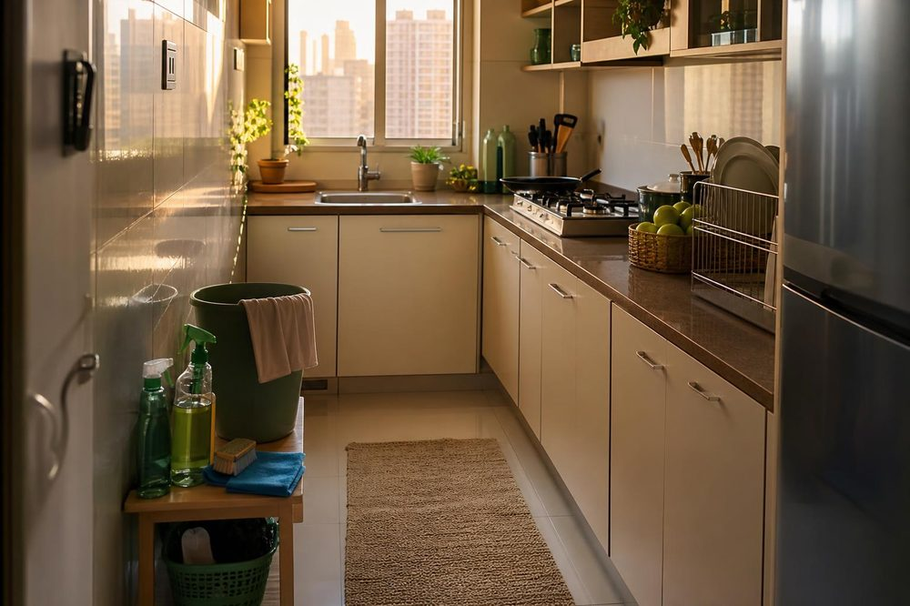
Chapter
The 10-Minute Daily Micro-Routine
Times are planning aids, not guarantees. Stop at the limit without leaving raw-food soil or wet walking surfaces unfinished.
Day 1 · Understanding the SWEEP Loop
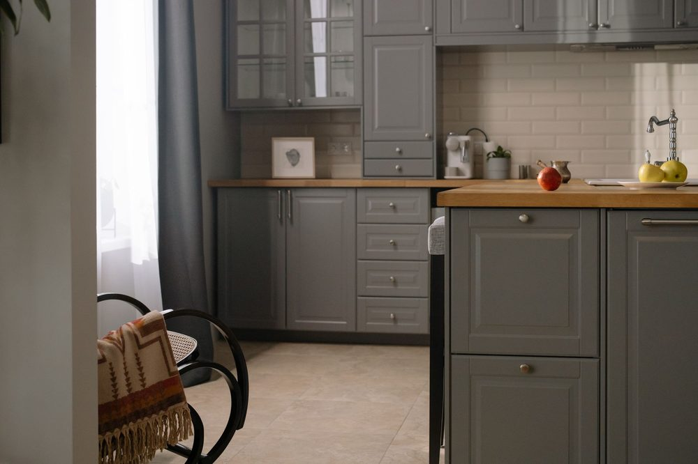
Day 1
Understanding the SWEEP Loop
The SWEEP loop targets the five key areas that accumulate mess in small kitchens.
SWEEP is order, not a slogan: Surfaces, Washware, Empty waste, Equipment, Put away. Start where food sits. Never skip: washing anything that touched raw meat, and drying a wet floor.
Do this
Identify the five areas of the SWEEP loop: Surfaces, Washware, Empty Waste, Equipment, and Put Away.
Establish a routine that follows these steps in order to maintain a clean kitchen.
Set a timer for each block to keep the process efficient.
Day 2 · Three timed versions
Day 2
Three timed versions
Establishing a consistent cleaning ritual can significantly reduce kitchen clutter and stress.
3-minute reset (busy day): empty the sink of food, wipe the food-contact board, bin waste that will smell. Skip appliance faces. Never skip: raw-board wash and a dry pass on a wet floor.
10-minute daily: SWEEP once around the room. First: surfaces that touch food. Can skip: inside the fridge, oven glass. Unsafe to rush: raw-meat tools, broken glass, chemical spills.
20-minute recovery (neglected kitchen): same order, plus stove face and floor edges. If time ends mid-spill, finish food safety and slip hazards before you stop.
This can make routine cleaning easier and reduce missed tasks. It will not make the kitchen perfect.
Do this
Pick 3, 10, or 20 minutes before you start.
Food-contact and slip hazards first.
Stop when the timer ends unless raw soil or a wet floor remains.
Day 3 · Weekly Micro Rotations
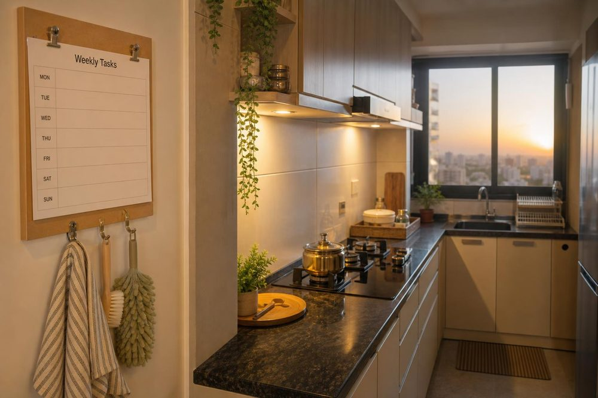
Day 3
Weekly Micro Rotations
Incorporating weekly micro rotations helps prevent deeper grime from accumulating in your kitchen.
Weekly micro rotations are essential for maintaining a clean kitchen over time. Choose three to five specific tasks to rotate throughout the week. Each task should take only two to four minutes, making them manageable even on busy days. For example, you might choose to clean the vent hood filter, wipe the fridge gasket, or detail the knobs and rails.
Assign each task to a day that aligns with your existing routine. If you brew coffee daily, consider cleaning the kettle or coffee maker parts midweek when you’re already in that zone. This approach ensures that maintenance feels less like a burden and more like a natural extension of your daily activities.
By incorporating these micro tasks into your weekly schedule, you prevent the buildup of grime and maintain a consistently clean kitchen. This proactive approach not only saves time in the long run but also keeps your kitchen looking and feeling fresh.
Do this
Choose three to five weekly tasks to rotate through your schedule.
Assign each task to a specific day to create a routine.
Keep the tasks short and manageable to encourage consistency.
Chapter opener
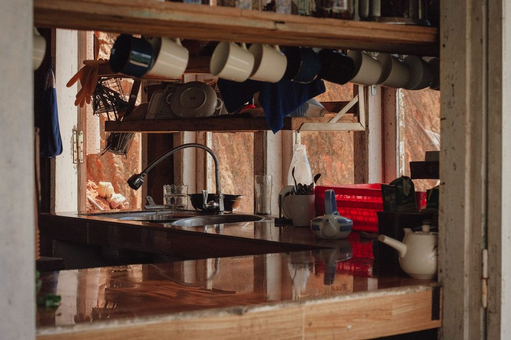
Chapter
Landlord-Safe, Surface-Specific Cleaning Methods
Your tiny kitchen has big responsibilities. Every surface carries its own story, from glossy laminate to warm butcher block, metallic stainless steel, and delicate chrome fixtures. Clean them well and you enjoy a crisp, calming space that feels twice as big. Clean them poorly and you risk streaks, scratches, or a deposit deduction you did not expect.
Day 1 · Understanding the pH Pathway
Day 1
Understanding the pH Pathway
Match the method to the soil and surface using the pH Pathway.
The pH Pathway is your decision tree for cleaning. It connects the type of soil to the safest chemistry and helps you confirm that the surface can tolerate it. Think of it as three lanes: Acid Lane, Alkali Lane, and Neutral and Oxidizer Lane.
Acid Lane is best for mineral scale, hard water spots, and soap scum. Examples include diluted white vinegar or citric acid, but use with caution on grout, metals, and natural stone.
Alkali Lane is ideal for oils, baked-on grease, and general food residues. Diluted castile soap, sodium bicarbonate, and washing soda in low concentration are effective here, but use with caution on aluminum and sensitive coatings.
Day 2 · Cleaning Laminate Counters
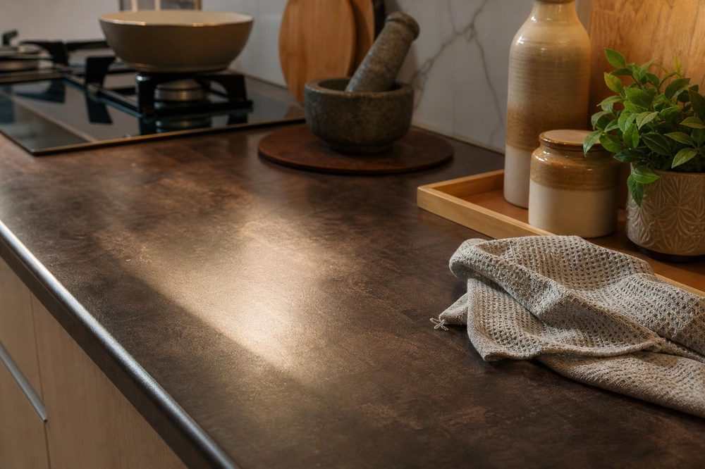
Day 2
Cleaning Laminate Counters
Laminate. Sensitive to standing water at seams, strong acid, and scouring powder.
For each material: what it hates, everyday method, stuck-on method, what to avoid, rinse, dry, hidden-spot test, and what to do if damage already shows. When unsure, stop and check the maker or landlord guidance.
Everyday: wrung cloth, warm water, drop of castile soap. Stuck-on: baking-soda paste on a soft cloth, then rinse. Avoid: vinegar on unsealed seams, steel wool. Rinse food areas. Dry the seam. Test inside a cupboard overhang. If the film is lifting, stop wet-cleaning that edge and keep it dry.
Day 3 · Maintaining Butcher Block Surfaces
Day 3
Maintaining Butcher Block Surfaces
Sealed wood or butcher block. Sensitive to pools of water, bleach, and unsanctioned sanitizer claims.
For each material: what it hates, everyday method, stuck-on method, what to avoid, rinse, dry, hidden-spot test, and what to do if damage already shows. When unsure, stop and check the maker or landlord guidance.
Everyday: barely damp cloth with a drop of soap, wipe with the grain, dry immediately. Stuck-on: gentle scrape with a plastic card, then soap. Avoid soaking, chlorine bleach, and strong acid. After raw meat: wash with detergent, rinse, then use a food-contact sanitizer that is labelled for wood or switch to a dedicated board. This book does not set a peroxide contact time for wood.
Day 4 · Cleaning Stainless Steel Surfaces
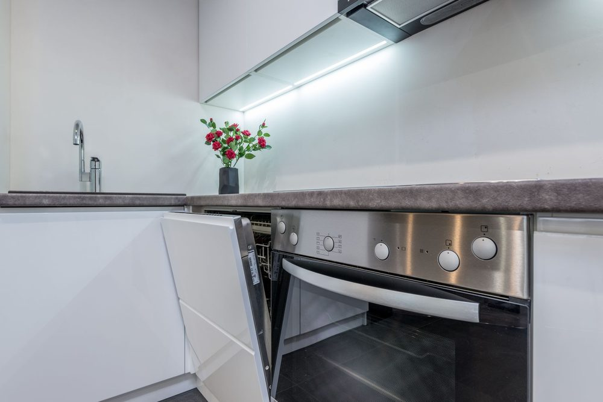
Day 4
Cleaning Stainless Steel Surfaces
Stainless. Sensitive to abrasive pads, chloride bleach left to dry, and circular scratching.
For each material: what it hates, everyday method, stuck-on method, what to avoid, rinse, dry, hidden-spot test, and what to do if damage already shows. When unsure, stop and check the maker or landlord guidance.
Everyday: microfiber with diluted soap or a labelled stainless cleaner, wipe with the grain, dry. Stuck-on: baking-soda paste, then rinse. Avoid steel wool. Rinse if the product says to. Dry to limit spots. Test behind an appliance if you can reach. If rust spots appear, stop and use a product labelled for stainless; do not sand a rental appliance.
Day 5 · Effective Glass Cleaning Techniques
Day 5
Effective Glass Cleaning Techniques
Glass. Sensitive to oily residue and dirty cloths that smear.
For each material: what it hates, everyday method, stuck-on method, what to avoid, rinse, dry, hidden-spot test, and what to do if damage already shows. When unsure, stop and check the maker or landlord guidance.
Everyday: vinegar-water on compatible glass, or a labelled glass cleaner; squeegee; dry edges. Avoid vinegar on surrounding stone sills. Rinse if food-adjacent. Hidden-spot test on a corner. If the pane is filmed, wash the cloth; do not add more product.
Chapter opener
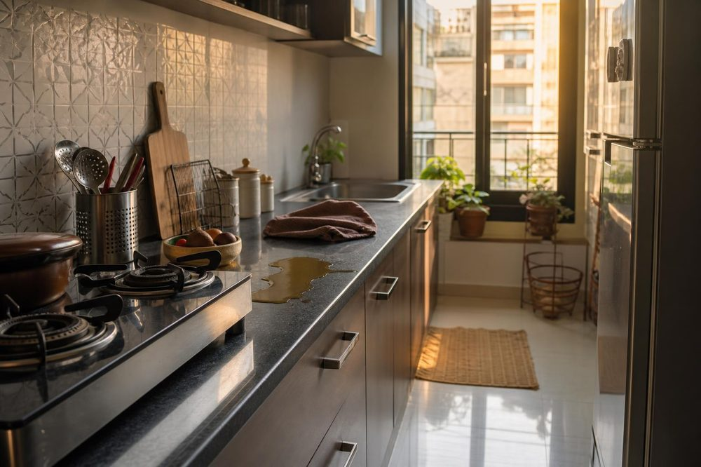
Chapter
Quick Spill Response and Sanitization Protocols
Match the procedure to the spill. This chapter is household first aid, not a complete professional hazardous-materials or food-safety protocol.
Day 1 · Understanding the STOP Framework
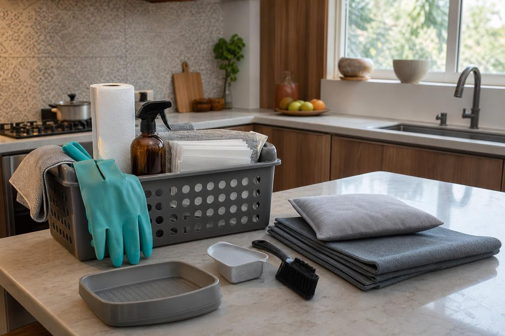
Day 1
Understanding the STOP Framework
In this apartment
A drink hits the only walkway in a galley kitchen. Stop feet first, then soil.
The STOP framework provides a structured response to spills, ensuring efficiency and cleanliness.
STOP: Secure the area, triage what is food-contact, operate with one method, purge dirty cloths. Ordinary crumbs: dry sweep or cloth, then a soap wipe if needed. Low-risk water: absorb, soap if sticky, dry so nobody slips.
Broken glass: shoes, gloves, stiff card into a puncture-proof container; cloth last, then discard or wash that cloth apart. Grease or hot oil: cool first, never water on hot oil, then soap. Cleaning-product spill: ventilate, do not mix, read that label, absorb with disposable material if the product says so.
Stop and seek additional guidance when: the spill involves an unknown chemical, a large quantity of cleaning product, bodily fluids, persistent mould, electrical equipment, or a surface whose material is unknown. Unplug only if you can do so without standing in liquid.
Day 2 · Responding to Raw Meat Drips
Day 2
Responding to Raw Meat Drips
In this apartment
Raw chicken juice on the only counter. Food comes off the board before any spray.
Raw meat spills require immediate attention and a structured cleaning approach to prevent contamination.
This is not a homemade peroxide protocol. 1) Move food and utensils off the area. 2) Absorb without spreading. 3) Clean with a suitable detergent. 4) Rinse if that cleaner requires it. 5) Use a food-contact sanitizer according to its label. 6) Keep the surface wet for the labelled contact time. 7) Rinse afterward if the label requires rinsing. 8) Wash and dry reusable cloths apart from everyday kitchen cloths.
Do not claim a homemade solution is a sanitizer because it contains hydrogen peroxide. If you do not have a labelled food-contact sanitizer, clean thoroughly with detergent, rinse, keep raw work on a dedicated board, and replace the sanitizer before the next raw-meat session.
Test and verify
Clear food and utensils.
Absorb, then detergent-clean.
Apply only a labelled food-contact sanitizer and honour wet contact time.
Rinse if the label requires it. Isolate cloths.
Day 3 · Cleaning Dairy and Sugary Liquids
Day 3
Cleaning Dairy and Sugary Liquids
Dairy and sugary spills require careful attention to prevent stickiness and odors.
Absorb, wash with warm water and soap, rinse food-contact, dry so it is not tacky. Odour is not a reason to apply peroxide unless that product's label covers the surface. Do not call the dwell time sanitation.
Day 4 · Addressing Greasy Splatters
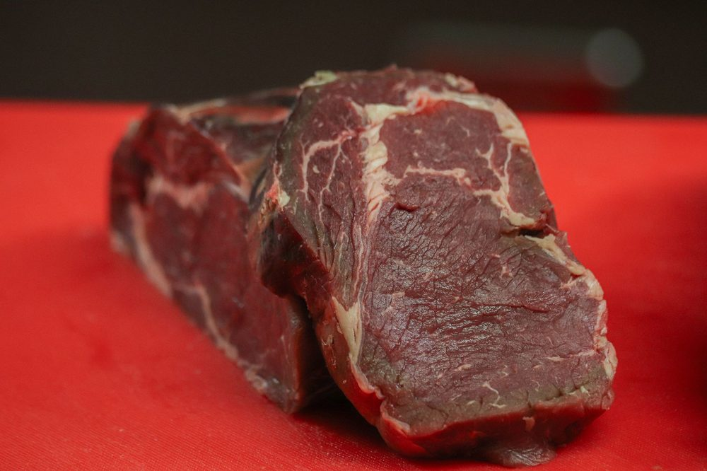
Day 4
Addressing Greasy Splatters
Greasy spills require careful cleaning to avoid spreading the oil further.
If oil is hot, wait. Wipe with soap, not a flood of water on a hot pan. Dry the stove so it is safe to use. Skip this routine if grease is inside an electrical housing — that is escalation.
Chapter opener
Chapter
Seasonal Deep-Clean Playbooks for Small Kitchens
This chapter provides a structured approach to deep-cleaning small kitchens, ensuring efficiency and effectiveness without overwhelming the space or the cleaner. It emphasizes a seasonal reset to maintain cleanliness and functionality.
Day 1 · The Importance of a Seasonal Reset
Day 1
The Importance of a Seasonal Reset
A seasonal deep clean helps maintain a functional and pleasant kitchen environment.
Deep cleaning a small kitchen can be a daunting task, but with a clear plan, it becomes manageable. Ravi starts by blocking out a 90-minute session on his calendar, ensuring he has the time to focus on high-value zones like the stovetop and the fridge. He stages his compact cleaning kit, which includes an all-purpose concentrate, a scrub paste, and microfiber cloths, ready for action.
The PREP cycle is crucial. Ravi powers down his appliances and removes any items from the fridge, grouping them by zone for easy return. He protects his countertops with washable cloths and opens the window to allow fresh air in, setting the stage for a thorough clean.
By following the top down, inside out principle, Ravi begins with the range hood and upper cabinets. He wipes down the surfaces, ensuring that any drips fall onto areas he will clean later, preventing rework.
Day 2 · Executing the PREP Cycle
Day 2
Executing the PREP Cycle
The PREP cycle organizes the cleaning process into manageable phases.
Anjali starts by planning her session, selecting the two-day reset option to ensure she has ample time to clean thoroughly. She lists her focus zones, prioritizing the stovetop, oven, and sink. With her kit staged, she feels ready to tackle the task ahead.
During the Reset phase, Anjali powers down her appliances and removes all items from the fridge, grouping them by type. She protects her countertops with a folded towel and opens the window to let in fresh air. This preparation sets her up for success as she begins to eliminate grime.
As she moves into the Eliminate phase, Anjali applies her all-purpose concentrate to the stovetop and lets it dwell while she cleans the oven. She uses a scrub paste for baked-on soils, ensuring she tackles each area with the right method for maximum effectiveness.
Day 3 · Maintaining Your Kitchen Post-Clean
Day 3
Maintaining Your Kitchen Post-Clean
Establishing maintenance intervals prevents grime buildup and keeps the kitchen in good condition.
After completing his deep clean, Vikram knows that the work doesn't end there. He sets up a simple maintenance schedule for his kitchen, tracking intervals for cleaning the range hood filter, oven, and fridge gaskets. This proactive approach helps him avoid unpleasant surprises later on.
Vikram uses a dashboard to log maintenance dates, ensuring he never forgets to clean the drain or flush the sink. By keeping track of these intervals, he can maintain a clean and efficient kitchen without the chaos of a deep clean every few weeks.
He also adapts his cleaning methods to his small space, using a compact handheld vacuum to keep crumbs at bay and ensuring that he cleans the faucet aerator regularly to prevent clogs. This attention to detail helps him maintain the cleanliness achieved during his seasonal deep clean.
Chapter opener
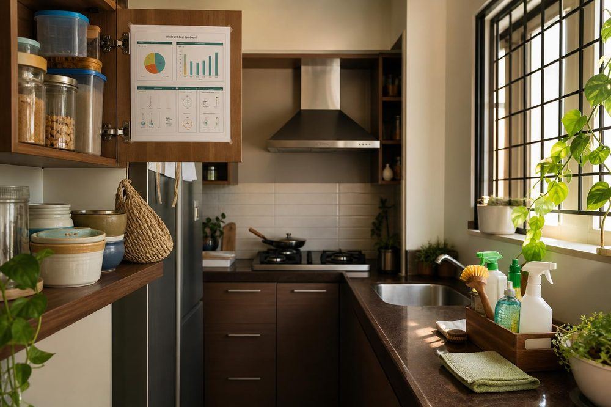
Chapter
Tracking Waste and Costs for Compact Living
Reusable tools have manufacturing, laundry, replacement, and transport impacts. Track a baseline before you change the routine, then compare. Zero waste is the direction, not a certificate.
Day 1 · Building Your Waste and Cost Dashboard
Day 1
Building Your Waste and Cost Dashboard
In this apartment
Log one month of receipts before you change brands. Otherwise you cannot tell if refills helped.
A Waste and Cost Dashboard helps you measure and manage your waste effectively.
Fields: disposable cloths or wipes avoided, packaging bought, cleaner volume used, refill trips, cost per month, estimated life of reusables, how you dispose of worn tools, and water use only when it changes the decision (for example, boiling cloths every day).
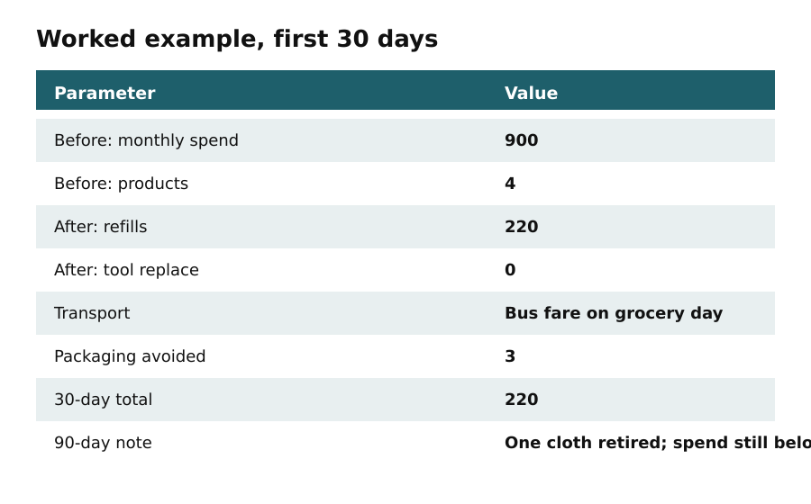
What to notice: this is one household's log, not a savings guarantee. Start with a baseline week.
Blank log: date; item; qty; cost; packaging type; notes. Keep it on a cabinet card.
The table is a completed example. Copy the blank fields, not the rupee amounts.
Do this
Draft your dashboard with four core metrics and two optional ones.
Keep it visible in your kitchen or on your phone.
Track your baseline for two weeks without changing your routine.
Day 2 · Mapping Your Refill Route
Day 2
Mapping Your Refill Route
Mapping your refill route ensures you have easy access to bulk refills and reduces waste.
Start by listing potential refill sources that you already pass during your errands. Consider bulk sections of grocery stores, community co-ops, refill shops, and pharmacies that may offer refill programs.
Call or check the websites of these stores to confirm their refill policies, hours, and container requirements. This preparation will save you time and ensure you have what you need when you go to refill.
Once you have identified your refill sources, plan your refill day to coincide with your regular errands. This will help you maintain a consistent refill schedule, ideally every five to six weeks for items like multipurpose concentrates.
Do this
List potential refill sources you already pass during errands.
Confirm refill policies and hours with these stores.
Plan your refill day to coincide with your regular errands.
Day 3 · Applying the Constraints Compass
Day 3
Applying the Constraints Compass
The Constraints Compass helps you evaluate your options based on water, power, space, and motion.
Before purchasing or modifying any cleaning tools, evaluate them using the Constraints Compass. Ask yourself how much water the method requires, whether it needs electricity, how much space it occupies, and how it will stay put during travel or if the space is limited.
For example, if water is tight, opt for low-rinse methods and consider installing a basin to collect rinse water. If you need to charge a device, choose one that can be charged via USB to accommodate off-grid situations.
When it comes to space, standardize bottle sizes and use nesting containers. If you rent, consider using a tension rod under the sink to hang cloths and keep bottles upright.
Do this
Evaluate cleaning tools using the Constraints Compass: water, power, space, and motion.
Choose low-rinse methods and manual tools where possible.
Standardize bottle sizes and use nesting containers.
Day 4 · Running the Ninety Day Sprint
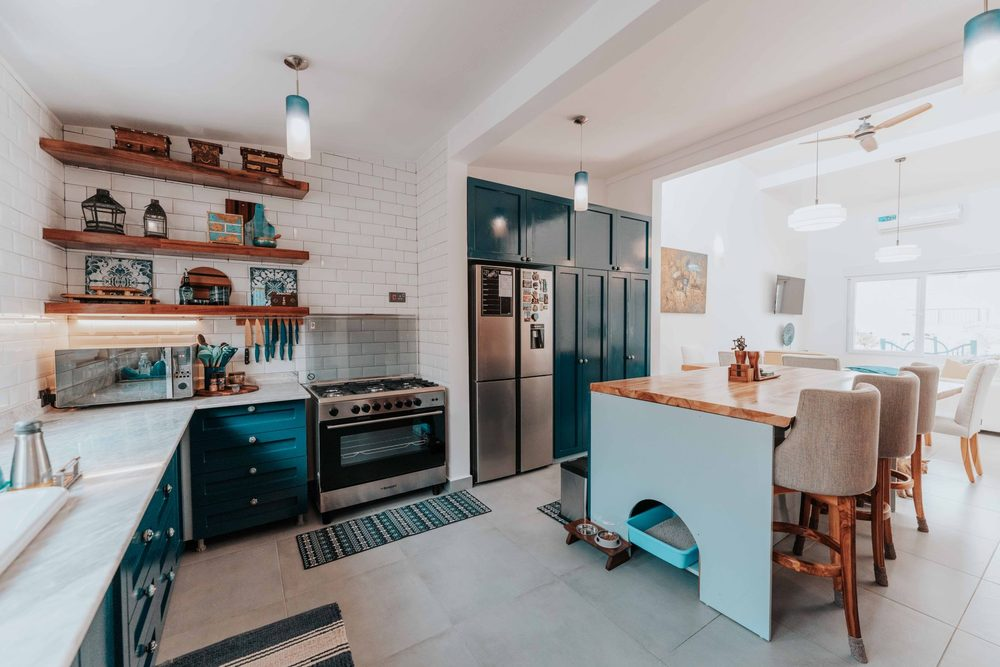
Day 4
Running the Ninety Day Sprint
In this apartment
A family of four living in a thirty-foot RV wants to streamline their cleaning routine while on the road. They decide to implement a ninety-day sprint to improve their waste and costs.
A ninety-day sprint focuses your efforts and locks in improvements over time.
To begin your ninety-day sprint, focus on one area each month. In the first month, replace a single-use item with a refillable or reusable option. For instance, switch from disposable wipes to reusable cloths or a refillable spray bottle.
In the second month, refine your refill route and bundle errands to make refilling more efficient. Adjust dilution ratios for your cleaning solutions if you notice streaks or residue after cleaning.
By the third month, lock in your best practices. Update your labels, storage map, and dashboard targets to reflect your improved system. This will help you maintain your progress and continue to adapt as needed.
Do this
Focus on one area each month for the ninety-day sprint.
Replace single-use items with reusable options in the first month.
Refine your refill route and bundle errands in the second month.
Chapter opener
Chapter
Compact Zero-Waste Cleaning Kit Checklist
This chapter provides a comprehensive guide to creating a compact, lower-packaging cleaning kit tailored for tiny kitchens. It emphasizes the importance of reducing clutter and waste while maintaining cleanliness in a limited space.
Day 1 · What this sheet is for
Day 1
What this sheet is for
A compact cleaning kit reduces clutter and simplifies maintenance.
This checklist is designed to minimize clutter, chemicals, and waste while keeping a tiny kitchen in working order. By standardizing tools and simplifying refills, it protects sensitive surfaces and adapts to renters and mobile kitchens. You will save space, time, and money, while preventing overbuying.
The core list includes essential items that are versatile and effective. By focusing on multi-use products, you can streamline your cleaning process and ensure that you have everything you need without excess.
Implementing this kit not only enhances the cleanliness of your kitchen but also promotes a sustainable lifestyle. It encourages the use of eco-friendly materials and reduces the number of single-use products in your home.
Day 2 · How to Use the Checklist
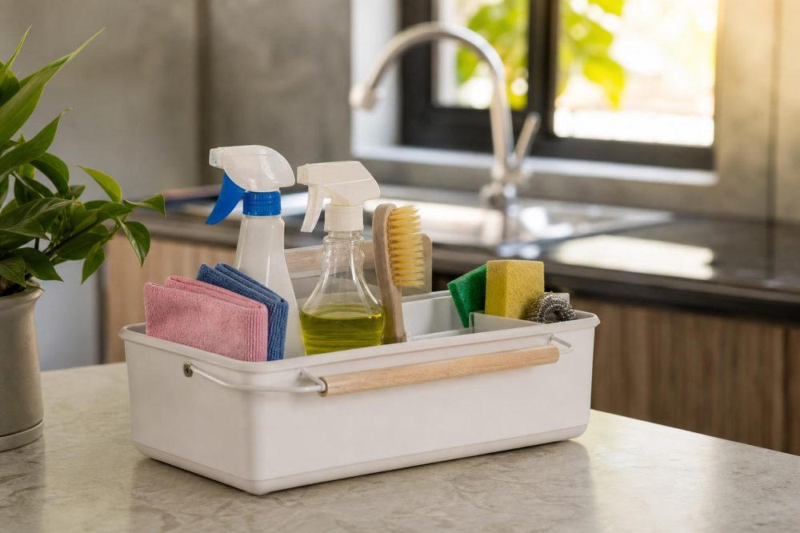
Day 2
How to Use the Checklist
Using the checklist helps in creating an efficient and tailored cleaning kit.
Start with the core list provided in the checklist. This list includes all the essential items you need for a compact cleaning kit. Only add optional and seasonal items if they are necessary for your cleaning routine.
Choose materials that are suited to your water and surfaces. For instance, if you have hard water, consider using a squeegee after rinsing to prevent water spots. Label everything clearly to avoid confusion and ensure that you can quickly find what you need.
Arrange your caddy thoughtfully. Place the cloths rolled at the front for easy access, with the spray bottle and jar in the middle, and brushes upright on the side. This arrangement allows for efficient use of space and quick retrieval of items.
Day 3 · Core Kit Items
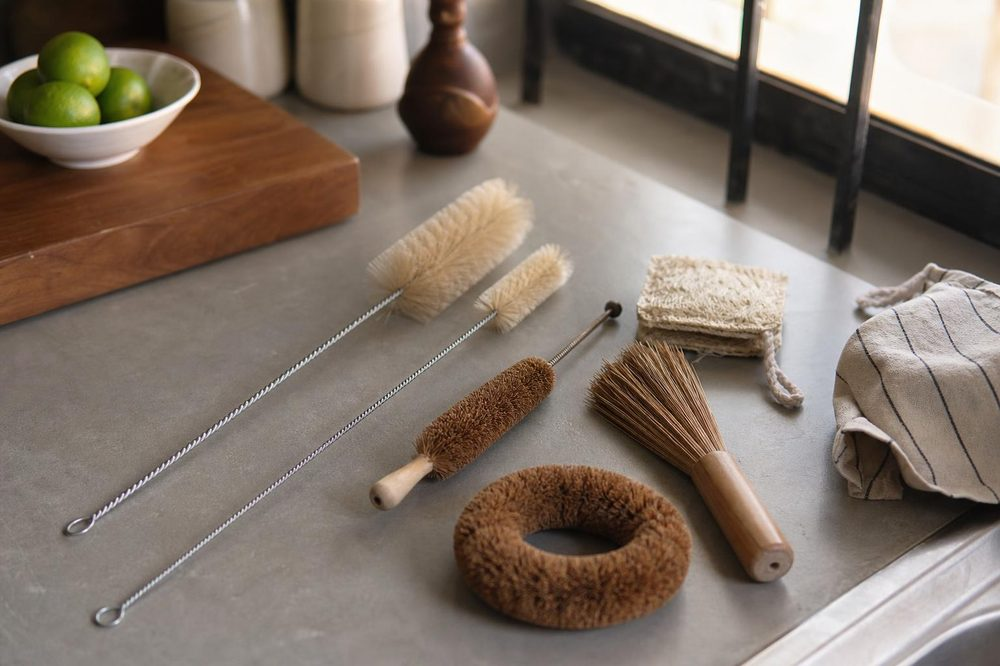
Day 3
Core Kit Items
Selecting the right items is crucial for an effective cleaning kit.
The core kit includes four multipurpose cloths made of organic cotton or microfiber, measuring 25 to 30 centimeters. These cloths are essential for various cleaning tasks and should be washed regularly to maintain their effectiveness.
You will also need two glass and stainless polishing cloths, which are lint-free and perfect for shining surfaces. A medium bristle scrub brush with a plant fiber or wood handle is necessary for tougher cleaning jobs, along with a bottle brush for narrow vessels and a detail brush for crevices and seals.
Additionally, include a compact squeegee for your sink and splashback, a scraper (either plastic card style or safety blade with cover), and a refillable spray bottle of 500 milliliters, made of glass or stainless. These items will cover all your basic cleaning needs.
Day 4 · Condition-based replacement
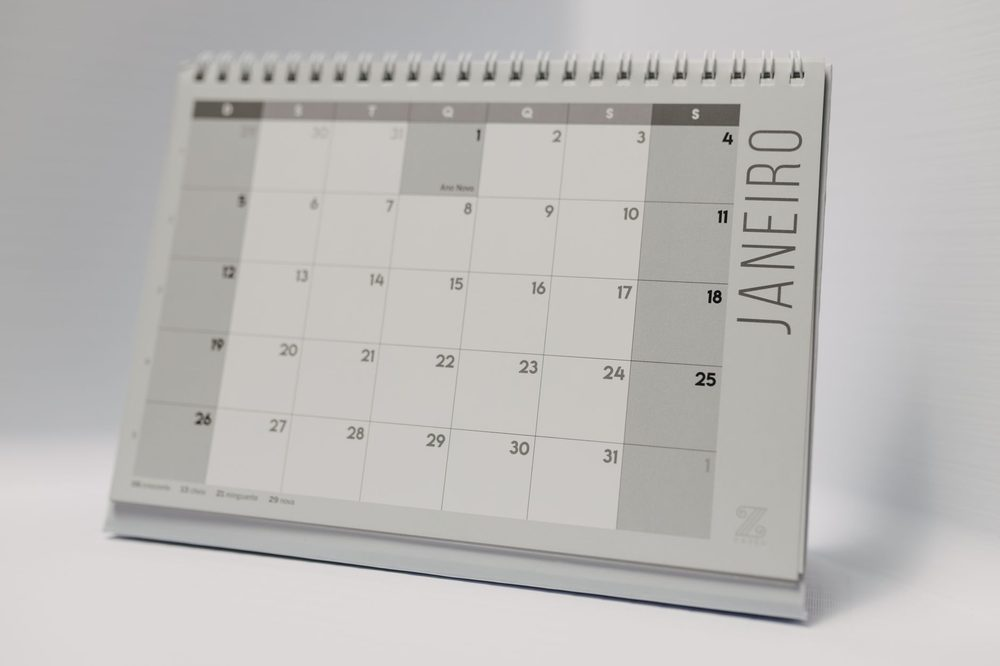
Day 4
Condition-based replacement
Regular maintenance of cleaning supplies is essential for optimal performance.
Replace or retire a cloth when it develops persistent odor, visible damage, poor absorbency, or cannot be cleaned effectively. Service life depends on material, use, washing, and drying. If a maker prints a replacement interval, follow that.
Retire a brush when bristles splay or trap soil. Retire a squeegee when the blade nicks and leaves lines. Retire gloves when they tear. A calendar date alone is not a rule.
Chapter opener
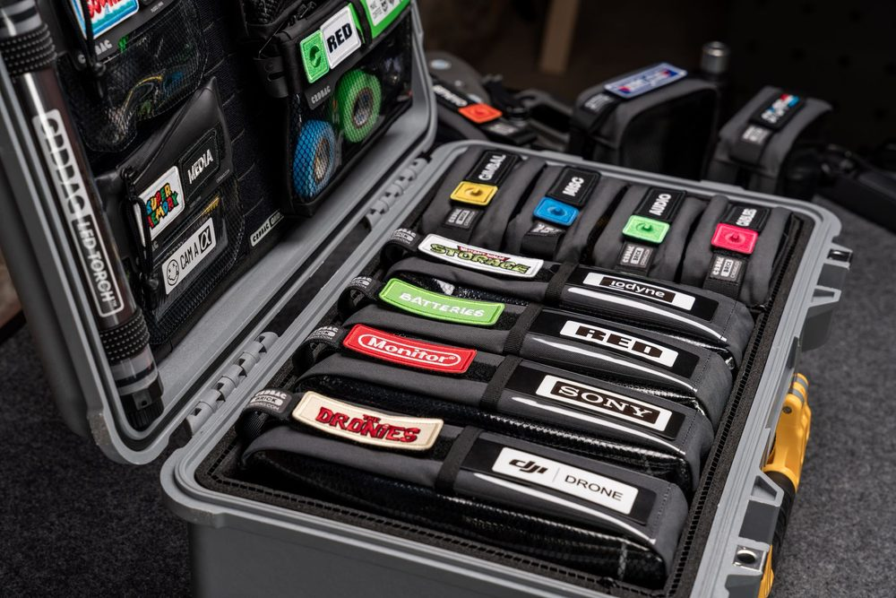
Chapter
Refill Label and Batch Log Template
Standardize your refill system for tiny kitchens with these print-ready templates that support concentrate and ready-to-use formats, color coding, and a four-week batch cycle tracker.
Day 1 · What this sheet is for
Day 1
What this sheet is for
A standardized refill system enhances organization and efficiency in small kitchens.
This material ensures consistent safe use of refillable cleaners, clear dosing, and quick audits of consumption, cost, and waste reduction. By implementing a refill label and batch log system, you can save space, reduce confusion, and improve routine reliability, which is crucial for mobile or compact setups like Aditi's.
Using color coding for different cleaning categories allows for quick identification and minimizes the risk of using the wrong product. For instance, Aditi can assign green for all-purpose cleaners, blue for glass cleaners, and yellow for degreasers, making her cleaning routine more efficient.
The batch log tracker helps monitor usage and waste, ensuring that Aditi can adjust her cleaning supplies based on actual consumption, leading to cost savings and reduced clutter in her kitchen.
Day 2 · How to Use the Templates
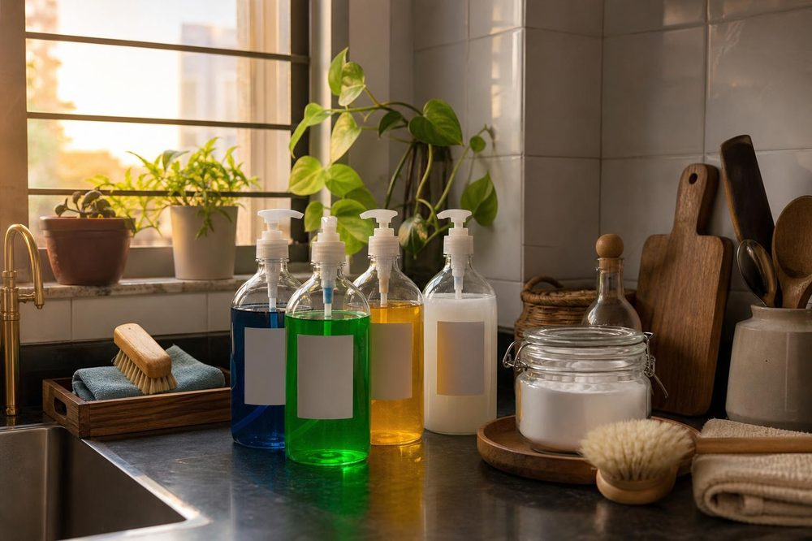
Day 2
How to Use the Templates
Proper use of templates ensures clarity and efficiency in managing cleaning supplies.
To begin, print the labels on waterproof paper to ensure durability. Cut them to fit your bottles and jars, allowing for easy application and readability. Priya can easily print these labels at home and cut them to the appropriate size for her small bottles.
Next, assign a color to each recipe category. For example, Priya can use green for all-purpose cleaners, blue for glass cleaners, and yellow for degreasers. This color coding not only helps in quick identification but also adds a visually appealing element to her kitchen.
Before mixing any cleaning solution, fill in the label fields with the recipe name, dilution ratio, and safety cautions. Once mixed, attach the label to the container. This step is crucial for maintaining clarity and safety in her cleaning routine.
Day 3 · Logging and Tracking Usage
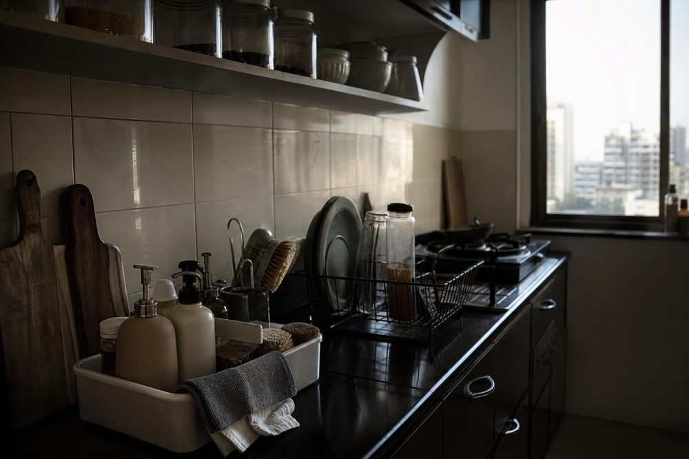
Day 3
Logging and Tracking Usage
Regular logging and tracking of cleaning supplies prevent waste and ensure efficient use.
After mixing your cleaning solutions, log each batch in the tracker immediately. Rohan should note the date mixed, batch number, and dilution ratio used. This practice helps him keep a clear record of what he has on hand and when it needs to be replenished.
Review the log weekly to adjust dilution, contact time, and quantities. For instance, Rohan can analyze his usage patterns and determine if he needs to mix smaller or larger batches based on his cleaning frequency.
The four-week batch cycle tracker is essential for planning. It allows Rohan to see planned versus actual batches and helps identify variances. This way, he can avoid overproduction and reduce waste, ensuring that he only makes what he needs.
This guide provides practical, landlord-safe cleaning methods tailored for compact kitchens, ensuring effective surface care while minimizing waste.
Day 1 · What this sheet is for
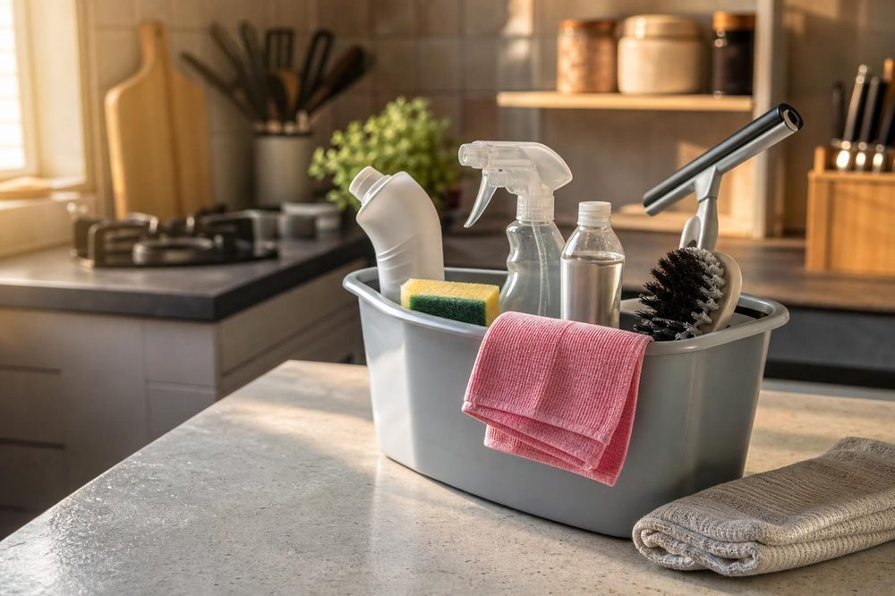
Day 1
What this sheet is for
A streamlined approach to cleaning protects both your property and your sanity.
This guide speeds decisions during daily wipe downs and deep cleans. It protects landlord property, reduces product clutter, and uses a space-saving kit. By utilizing fewer ingredients, you achieve safer outcomes and consistent results.
With a compact cleaning kit, you can quickly address various surfaces without the need for multiple products. This not only saves space but also simplifies your cleaning routine, making it easier to maintain a tidy home.
In Ravi's case, having a clear understanding of the right products and methods for his laminate counters and stainless steel appliances allows him to clean effectively without the risk of damage.
Day 2 · How to Use
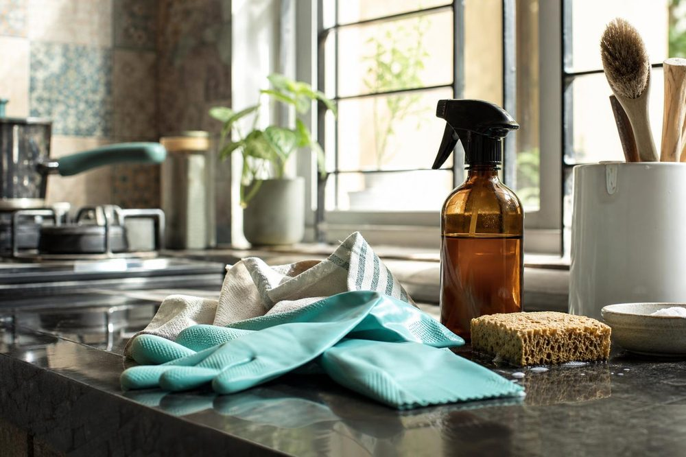
Day 2
How to Use
The right tools and methods ensure effective cleaning without damage.
Keep your cleaning kit ready, which should include a spray bottle, squeeze bottle, microfiber cloths, scrub brush, squeegee, soft sponge, and a small toothbrush. This ensures you have everything at hand when it's time to clean.
Start with the test spot workflow: Pick a hidden area on the surface you wish to clean. Apply your chosen solution lightly, and wait for the appropriate time—thirty seconds for liquids and two minutes for pastes. Wipe and dry, checking for any dulling or color change before proceeding.
By following this method, Priya can confidently clean her surfaces without worrying about damaging them, ensuring a thorough and safe clean.
Day 3 · Surface compatibility matrix
Day 3
Surface compatibility matrix
Different surfaces require tailored cleaning approaches for optimal results.
Laminate: soap, dry seams, no strong acid at edges. Wood: damp soap, dry, labelled sanitizer after raw meat only. Stainless: with the grain, no steel wool. Glass: clean cloth, acid only if the surround is not stone. Natural stone: no vinegar or citric acid; pH-neutral stone cleaner. Painted cabinets: wrung cloth, no abrasives. Appliance exteriors: follow the booklet; unplug if liquid reached vents. Seams and joints: less water, dry after.
What to notice: each row is a separate approach. Do not combine rows in one bottle.
Hidden-spot test before a new mix. If damage already shows, stop wet work and photograph for the landlord or maker rather than experimenting.
Day 4 · Tips for Success
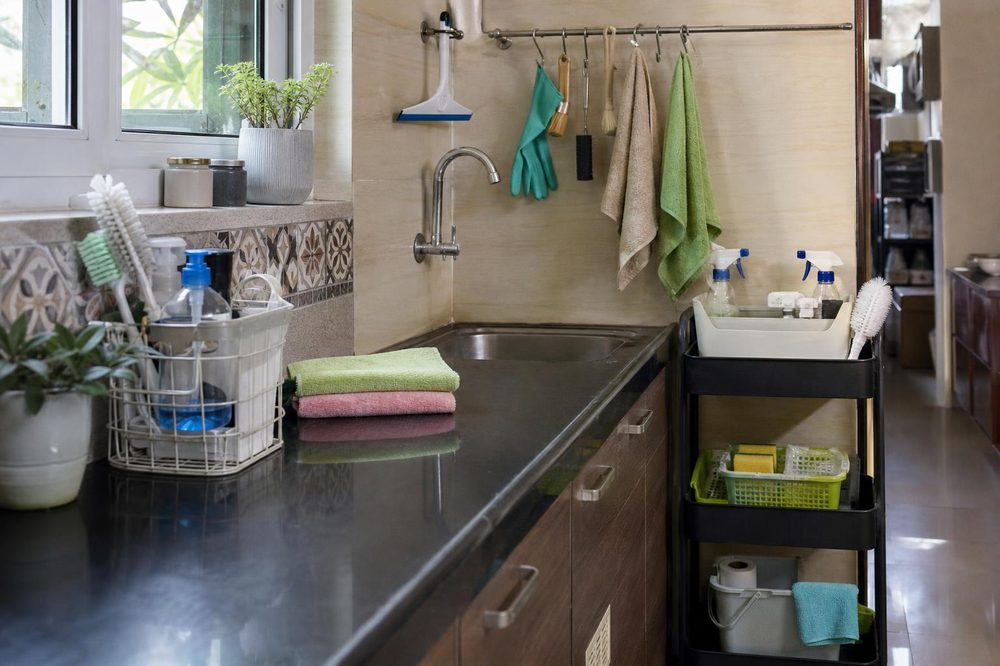
Day 4
Tips for Success
Simple strategies can enhance your cleaning effectiveness and efficiency.
Use minimal product and quick contact times to avoid waste and ensure surfaces are cleaned effectively. This also helps in maintaining the longevity of your surfaces.
Keep two microfiber cloths handy—one damp for cleaning and one dry for finishing. This ensures you have the right tools for both cleaning and drying, which is crucial for achieving streak-free finishes.
Label your cleaning bottles clearly to prevent mix-ups, especially between soap and vinegar. This small step can save you from potential cleaning mishaps.
Day 5 · Common Mistakes
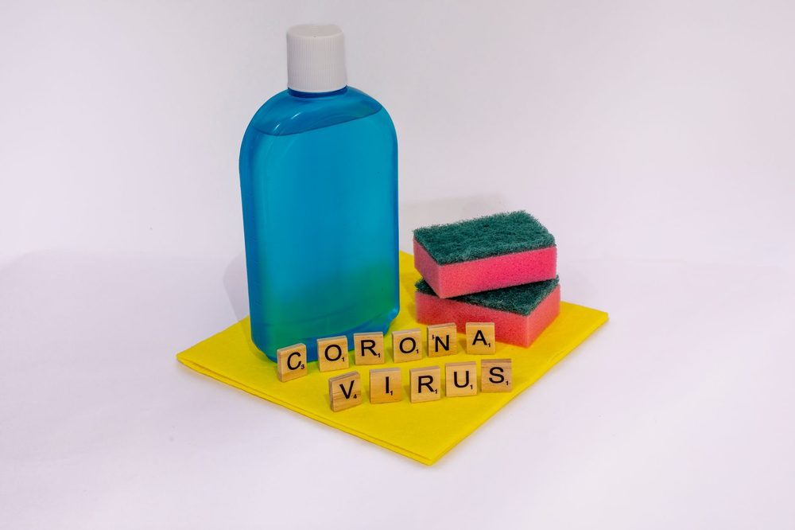
Day 5
Common Mistakes
Awareness of common pitfalls can prevent mistakes and enhance cleaning outcomes.
One common mistake is leaving acid on stainless steel surfaces, which can lead to dull spots. Always rinse thoroughly after using acidic solutions to maintain shine.
Another frequent error is skipping the rinse step, which can leave a film and streaks on surfaces. Always ensure to rinse with plain water after using acids or soaps.
Using abrasive pads on chrome or matte black surfaces can cause scratching. Opt for soft cloths or sponges to protect your surfaces.
Chapter opener
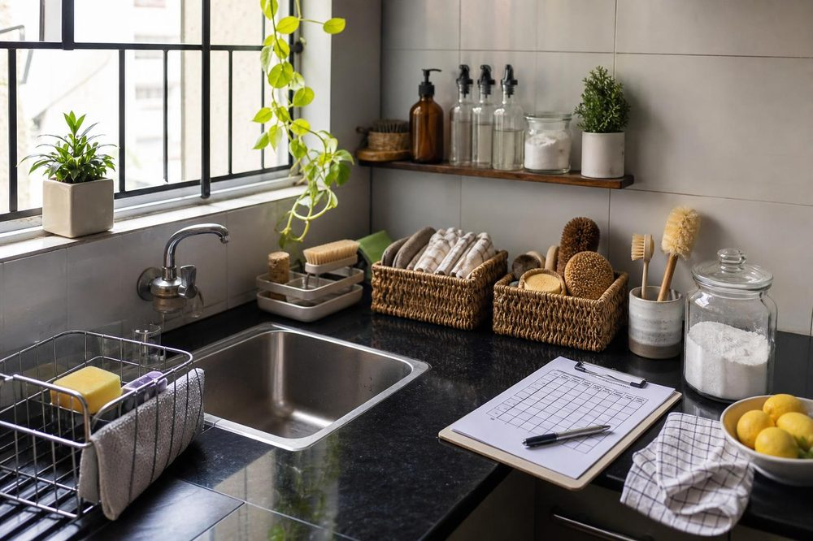
Chapter
Waste And Cost Tracker Worksheet for Tiny Kitchens
This chapter provides a comprehensive guide to tracking waste and costs in small kitchens, helping you adopt a zero-waste lifestyle while maximizing your space.
Day 1 · What this sheet is for
Day 1
What this sheet is for
Tracking waste and costs helps you identify areas for improvement.
The Waste and Cost Tracker Worksheet allows you to quantify your progress in achieving a zero-waste, space-saving cleaning routine. By revealing waste hotspots and spending patterns, you can set clear targets and compare weekly and monthly tallies.
This worksheet is designed to help you plan efficient refill routes and prioritize product swaps. For instance, by switching to concentrated cleaners, you can reduce packaging and save space, making your kitchen more organized.
Over a 90-day period, you can track your results and make informed decisions about your cleaning products, ultimately leading to a more sustainable lifestyle.
Day 2 · How to Use the Tracker
Day 2
How to Use the Tracker
Consistent tracking leads to better management of resources.
To effectively use the Waste and Cost Tracker, print one sheet per week or duplicate the digital copy. Spend five minutes on day one to set a baseline for your current products and costs.
Log daily actions and costs in brief notes, and tally your progress weekly on Sundays. This will help you stay accountable and focused on your goals.
At the end of each month, review your quick wins and update your targets. After 90 days, analyze your iteration notes to adjust your cleaning kit and improve efficiency.
Day 3 · Tips for Success
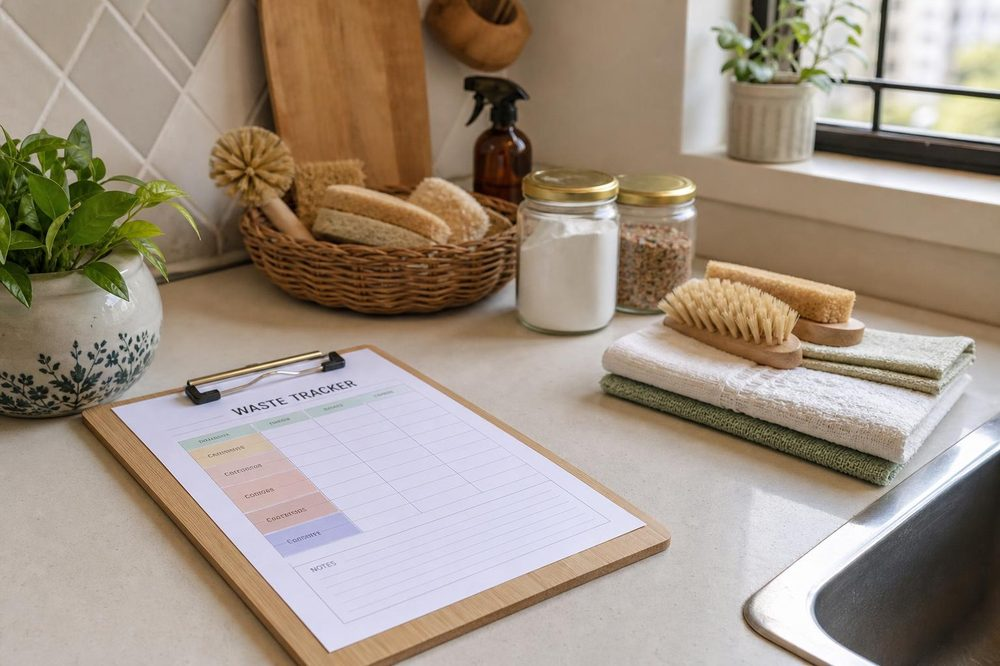
Day 3
Tips for Success
Implementing simple strategies can enhance your waste tracking efforts.
To succeed with the Waste and Cost Tracker, keep the worksheet visible near your sink for quick logging. This will encourage you to track your waste and spending consistently.
Use consistent units such as dollars, pieces, and inches to compare your weekly progress. This clarity will help you identify trends and make informed decisions about your cleaning products.
Batch your refills with errands to reduce travel time and prioritize multipurpose products to save space. Regularly review your quick wins every 30 days and swap one product at a time to avoid overwhelming changes.
Day 4 · Common Mistakes
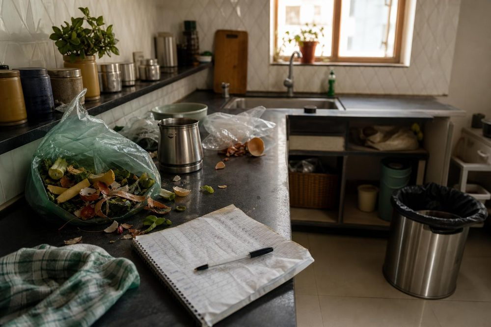
Day 4
Common Mistakes
Awareness of common mistakes can improve your tracking process.
One common mistake is skipping baseline metrics, which can lead to a lack of direction in your tracking efforts. Always start by establishing your current situation before making changes.
Another mistake is recording costs without dates, which can make it difficult to analyze your spending patterns over time. Ensure you log both the date and cost for each entry.
Planning refills without considering travel time can also hinder your efficiency. Always factor in how long it will take to refill items when planning your week.
Day 5 · Next Steps
Day 5
Next Steps
Integrating your tracking with daily routines enhances effectiveness.
To take your waste tracking to the next level, integrate your weekly tallies with your cleaning routine calendar. This will help you stay organized and ensure you are consistently working towards your goals.
Refine your storage layout based on the insights gained from your tracking. Identify which products take up the most space and consider consolidating or replacing them with more efficient options.
Plan your refill routes strategically to minimize travel time and maximize efficiency. By doing so, you will not only save time but also reduce your overall waste.
Chapter opener
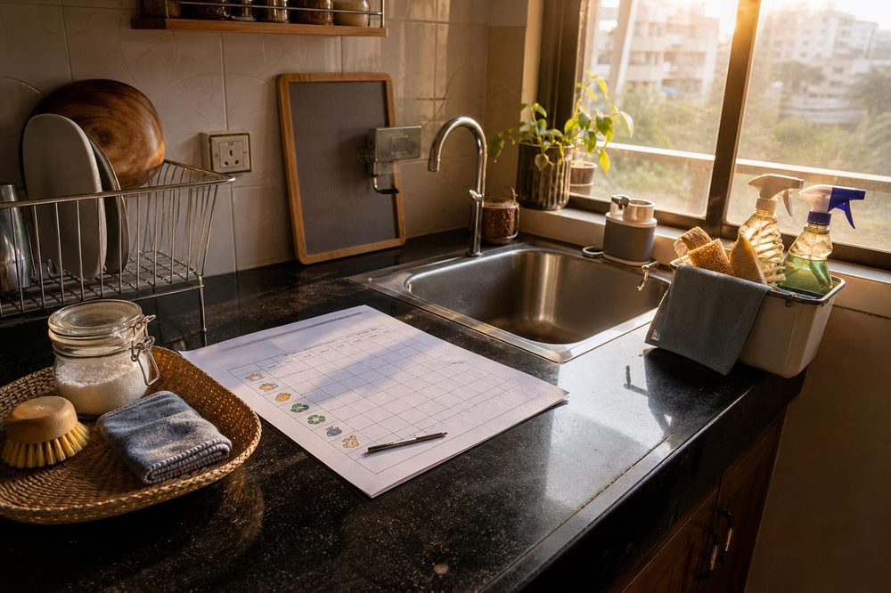
Chapter
Sources and Limits
Use labels and local rules over any summary in this book.
Reference · Sources and limits
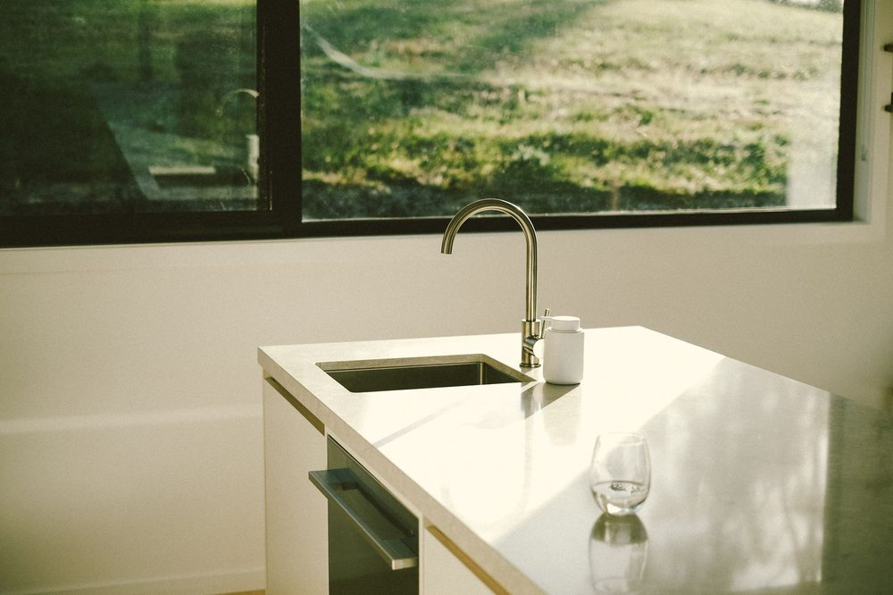
Reference
Sources and limits
Every contact time and food-contact sanitizing step comes from a product label, not from this book.
Cleaning versus sanitizing versus disinfecting: follow current public-health guidance that cleaning comes first, and that sanitizing or disinfecting requires a suitable product, wet contact time, and the labelled surface. The U.S. CDC distinguishes these jobs; use your local food-safety rules where they apply.
Hydrogen peroxide and isopropyl alcohol: use the concentration and PPE on the bottle you bought. Do not mix with vinegar, bleach, or soap. Store original containers away from children and heat.
Surface care: appliance and countertop manufacturers override any generic advice here. Stone, wood, and coated finishes fail in different ways.
Reusable textiles: wash and dry according to the cloth's care label. Laundry water and detergent are part of the waste picture.
Waste-reduction numbers in the worked example are illustrative for one household, not a certified life-cycle assessment.